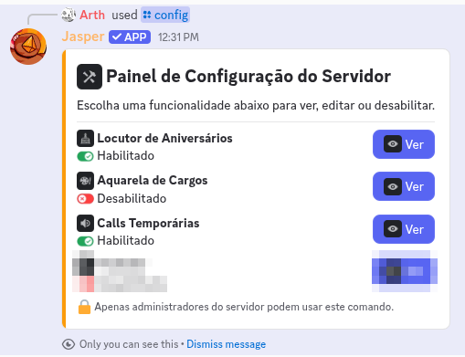
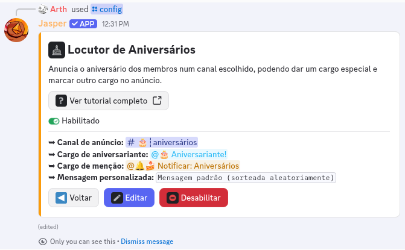
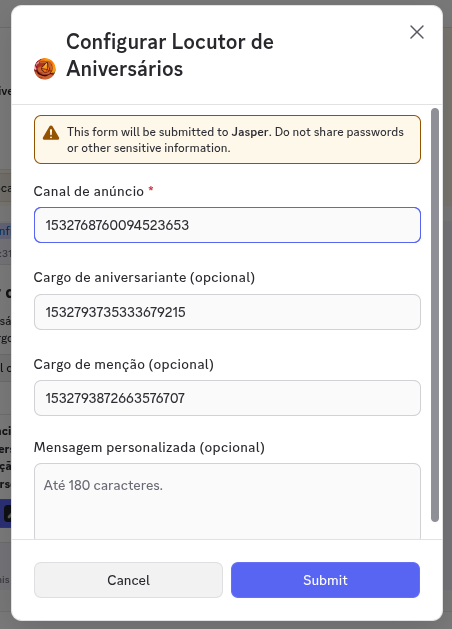
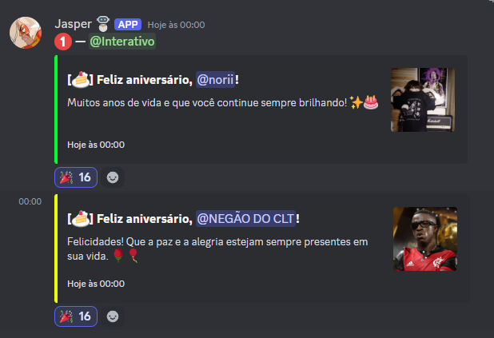
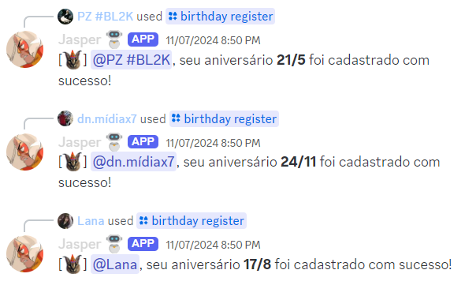

➥ Locutor de Aniversários é minha função especial pra anunciar o aniversário dos membros do seu
servidor quando chegar a hora. Bem direto ao ponto, né?
➥ Os membros precisam ter registrado os aniversários com o comando /birthday
register antes de eu poder anunciar.
➥ Configurar essa funcionalidade é algo restrito aos membros do servidor com permissão de
Administrador.
➥ Segue um pequeno tutorial de como configurá-lo:
1. Use o comando /config. Vou abrir o Painel de Configuração do
Servidor, com uma seção para cada funcionalidade que dá pra ligar por ali. Clique no botão
Ver da seção Locutor de Aniversários.

2. Dentro da seção você enxerga se ela está habilitada, quais opções estão valendo e um botão
Ver tutorial completo, que traz você de volta pra esta página. Se for a primeira vez, clique em
Habilitar; se não, você pode editar as opções existentes.

3. Vou abrir um formulário com quatro campos. Só o primeiro é obrigatório:
▸
Canal de anúncio: o ID do canal de texto onde os aniversários devem aparecer.
▸
Cargo de aniversariante (opcional): o cargo que eu entrego no dia e tiro
24 horas depois.
Eu preciso de
Gerenciar cargos e o cargo tem que estar abaixo do meu na hierarquia. Se não estiver, o
próprio formulário te avisa na hora em vez de falhar calado depois.
▸
Cargo de menção (opcional): quem eu marco junto do anúncio, pra avisar o pessoal.
▸
Mensagem personalizada (opcional): o texto do anúncio, com até
180 caracteres. Sem nada
aqui, eu uso frases aleatórias pré-definidas. É até mais legal, né?

4. Enviado o formulário, a função já está ativada! Agora é apenas aguardar até que algum membro do
seu servidor faça aniversário. Os aniversários são sempre anunciados à meia-noite do horário de Brasília.

5. Pra mudar alguma coisa depois, volte no
/config, clique em
Ver e depois em
Editar. Pra desligar, use o botão
Desabilitar na mesma seção.
Desabilitar não joga fora o que você configurou: quando quiser ligar de novo, o botão
Habilitar
reaproveita tudo e não te pede o formulário outra vez.
6. Ah, e não esquece de lembrar o pessoal de registrar a data de aniversário com
/birthday register. Cada membro só pode alterar a data a cada
180 dias,
então é bom pensar duas vezes antes de mandar qualquer coisa errada.

➥ Espero que você se aproveite! Qualquer dúvida, sinta-se livre para perguntar no meu
canal de suporte.
Publicado 7 de agosto de 2026. Dependendo da data de publicação, o texto
pode estar levemente desatualizado.